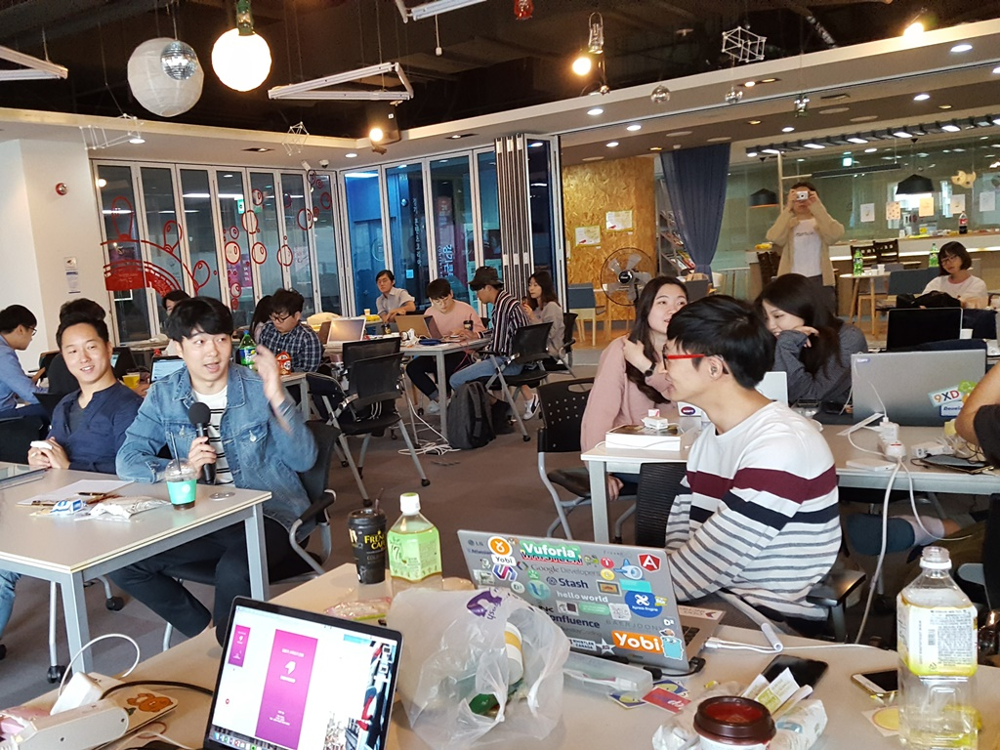
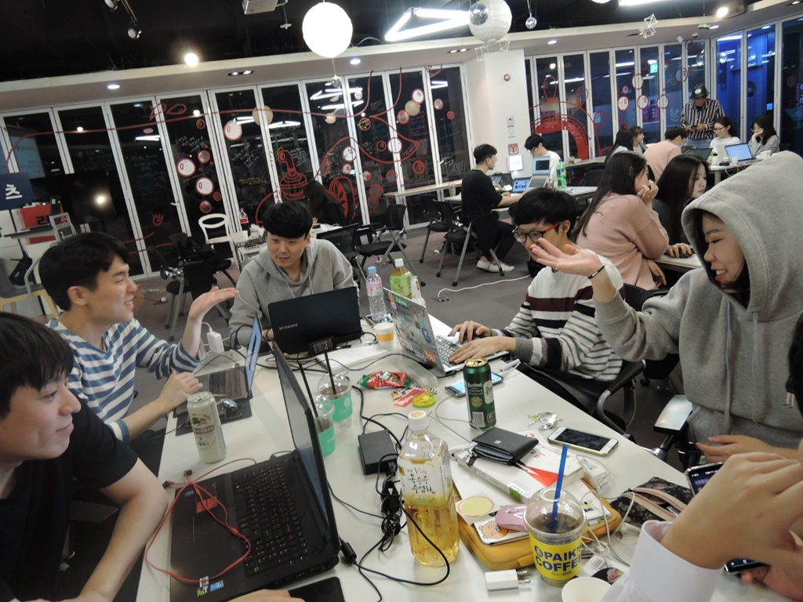
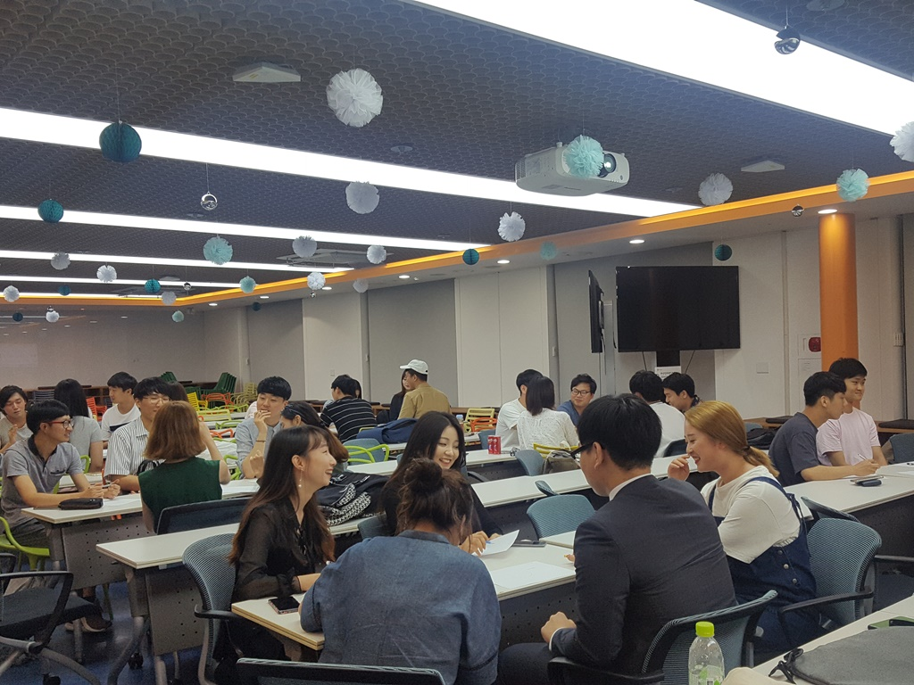
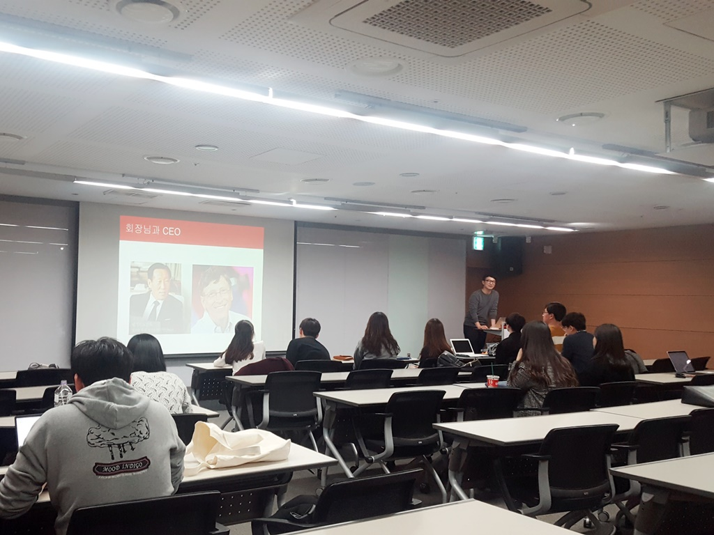
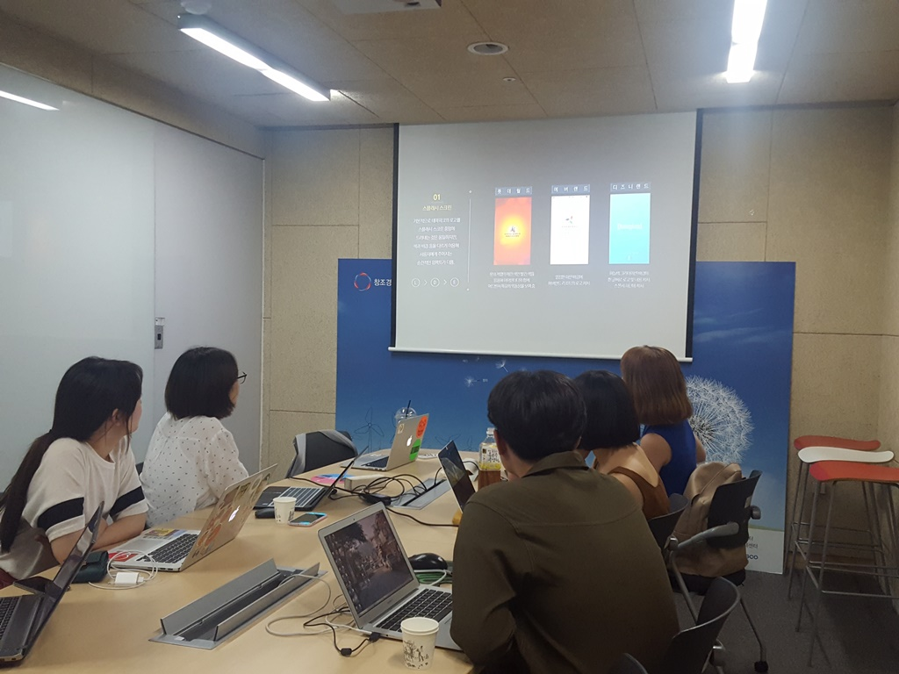
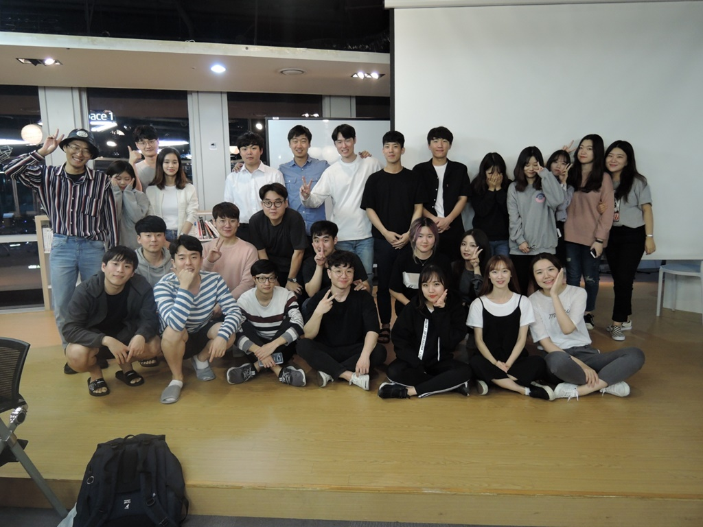
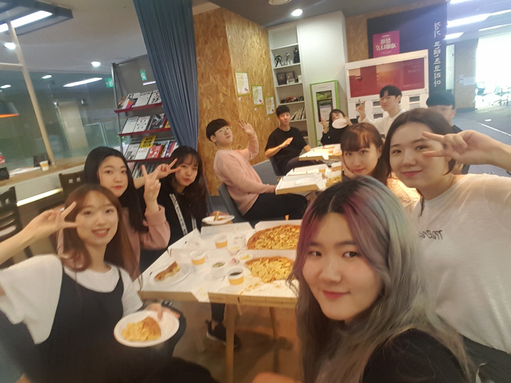
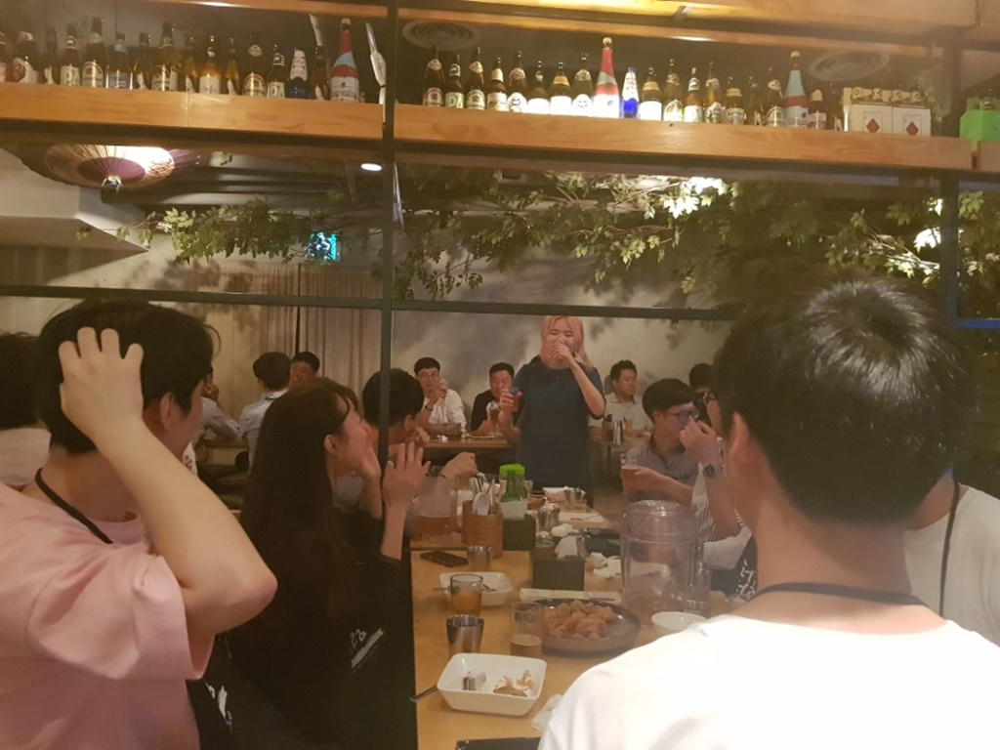

데브캠프 &
홈커밍 데이

- 


-
 2 +
2 +
- 

데브캠프DevCamp
devCamp는 프로젝트에 단기간 집중하기 위한 1박 2일 해커톤 형식 행사로, 6개월간 2회 진행됩니다. 팀별 집중 작업 이후 마지막 날에 현직자 OB 앞에서 프로젝트에 대한 피드백을 받습니다.
홈커밍 데이Homecoming Day
Homecoming Day는 6개월간 진행한 프로젝트를 최종적으로 발표하는 자리이며, OB와의 친목 또한 도모할 수 있습니다.
정규세션 / 스터디 / OB강연
- 


- 
- 
정규세션Weekly session
방학 중 매주 목요일 오후 7시, 학기 중 매주 토요일 4시에 정규 세션을 진행합니다. 정규 세션에서는 각 스터디별 진행상황 발표, 주제별 테마 세션 발표 혹은 devCamp 팀별 회의를 진행합니다.
스터디Study
정규 세션과 별개로 신입 기수를 뽑은 후 스터디를 진행합니다. 4~6명 단위로 스터디를 구성한 후, 스터디별 주제에 따라 목표를 설정하여 여 1달 이상 스터디를 진행합니다. 각 스터디 PM들은 운영진 PM에게 매주 진행 상황을 보고하며, 정규 세션 때 진행 상황을 발표합니다. 현재 Python, UX 리디자인, 알고리즘 등 총 9개의 스터디가 운영되고 있습니다.
OB강연OB lecture
실무에서 많은 경험을 쌓아 오신 OB분들을 초청하여 월 1회 강연을 실시합니다. 현 기수와 OB간 소통의 장을 마련하고, IT업계 현직자들로부터 실질적인 조언을 듣는 시간을 갖습니다.
대외활동
준비중입니다.
친목활동
- 
- 

- 
친목활동Fellowship activity
YAPP에서는 매 기수마다 신입 인원 선발 후 1박 2일 MT를 떠납니다. 또한 학기마다 1회씩 봄 소풍, 가을 운동회 등의 친목 행사를 개최합니다. 이외에도 수시로 번개 등의 친목 활동을 진행하고 있습니다.